Films Fraser Watched in 2024
I don't claim to be a film critic so I haven't written out long-ass reviews for these films. It's more of a record of what I watched and a vague indication of enjoyment. I love films though so come talk to me about any of these.
Oppenheimer
What a snooze fest. This film is for people who think they're smart. They all speak too quickly and it's too long.

All of Us Strangers
Loved this film so much. A gay man's hot new relationship with Paul Mescal and his old relationship with his suspiciously young parents. Love love love
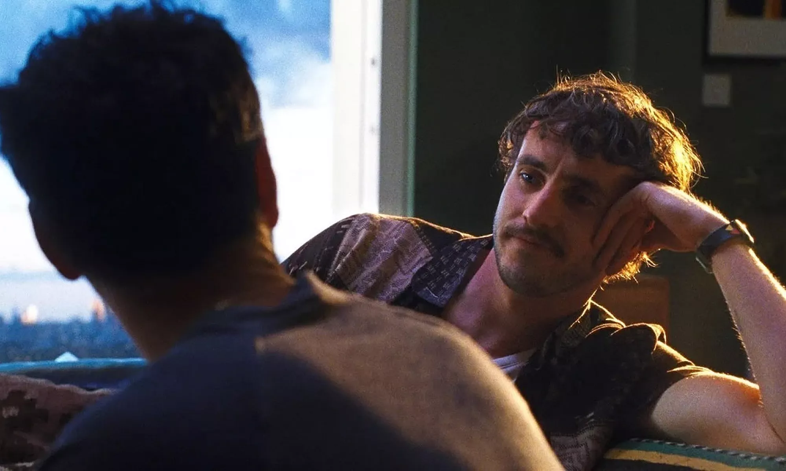Miller's Girl
Bad film about an older guy and how he fancies a minor. So icky and horrible
Wikiriders
Arty film about looking for rich guys in Mexico. The film feels unfinished because they apparently met him but couldn't show it for some reason
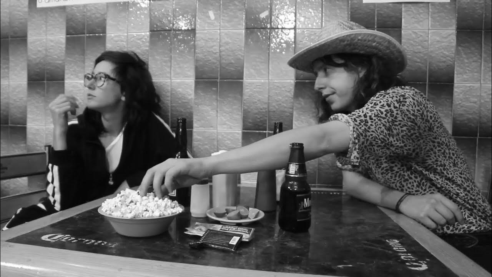All Shall be Well
Stunning film about older lesbians in Hong Kong. I cried and cried
La Huella de unos Labios
Sexy Mexican film about an alternative covid pandemic reality. Interesting but also pretty random
Anatomy of a Fall
Thrilling, gripping film about a murder trial in France. Insane

The Human Voice
Short film with Tilda Swinton being dramatic on the phone. It's so good
A Strange Way of Life
Short film about gay cowboys. Pedro Pascal's in it and it's fucking great
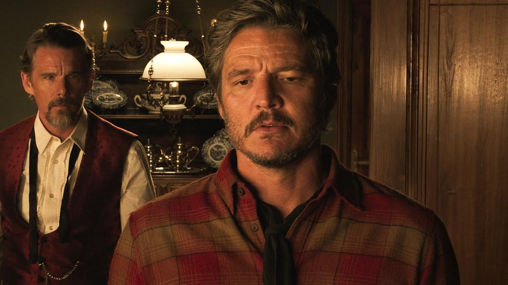Love is the Devil
Film about Francis Bacon, hated it and hate him
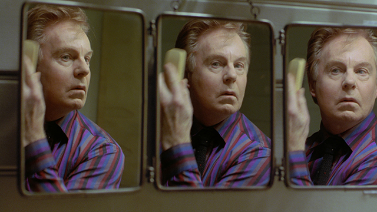Liuben
A sad gay film about Roma people in Bulgaria. Eye opening
Le Paradis
Pretty boring gay film about a youth detention centre in France. One cool part where he freestyle rapped but even that felt out of place
Like it is
Interesting older gay film with some brutal scenes. Pretty forgettable
Challengers
Very sexually charged film about tennis. I found it a bit cringe but it had its moments

The Women
Old film about women fawning around, it was pretty entertaining
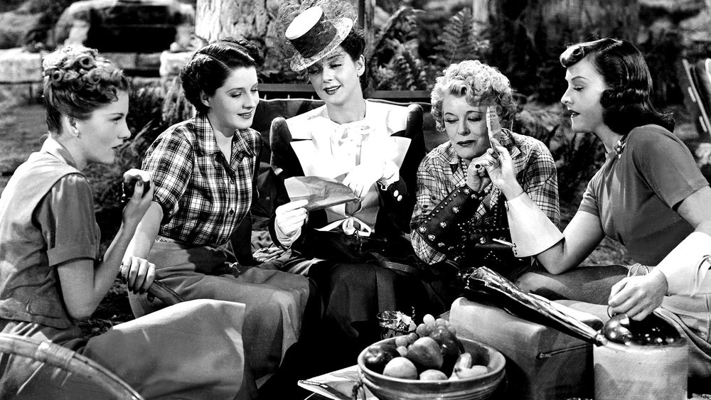The Wedding Banquet
Hilarious, wild film about a man in a gay relationship marrying a woman for a green card
Lose Your Head
Set in Berlin! Wasn't too bad. About gays and murder
Problemista
Silly film about a difficult person and how hard it is to emigrate to the US. Light hearted and easy to watch. A pleasure
Crossing
Amazing and eye opening story about a Georgian women meeting a community of trans women in Istanbul. Highly recommend
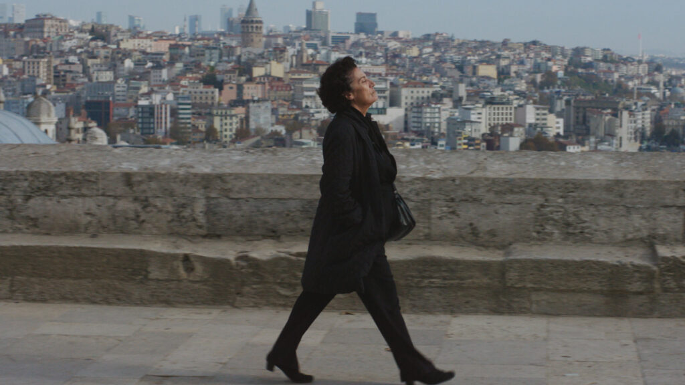Love Lies Bleeding
Watching this with a cinema full of lesbians was hilarious. It's brutal and hilarious
Patagonia
Gay film in Italy pretty different to your average Mongay. Has a wild scene where he pisses on him.
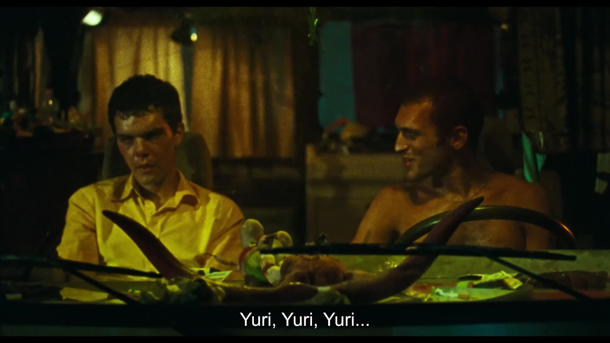And Then We Danced
What’s it like to be gay as a Georgian traditional dancer? All the usual tropes
Milk and Serial
Very unpleasant watch, about youtube pranksters, a topic I struggle with
Dan Savage's Porn Film Festival
A collection of 25 porn films 5 minutes or less. Fantastic, changed my whole outlook on sex. Life changing
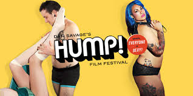Oldboy
Pretty wild film about being imprisoned for many years and finally getting out. Pretty grim, also pretty silly
Smiley Face
Hilarious stoner comedy, a bit on the nose but great to watch someone just being so utterly distressed by events. Loved it
Des Garçons de Province
Pretty plain gay film at Mongay but I enjoyed the different vibe to your standard gay film
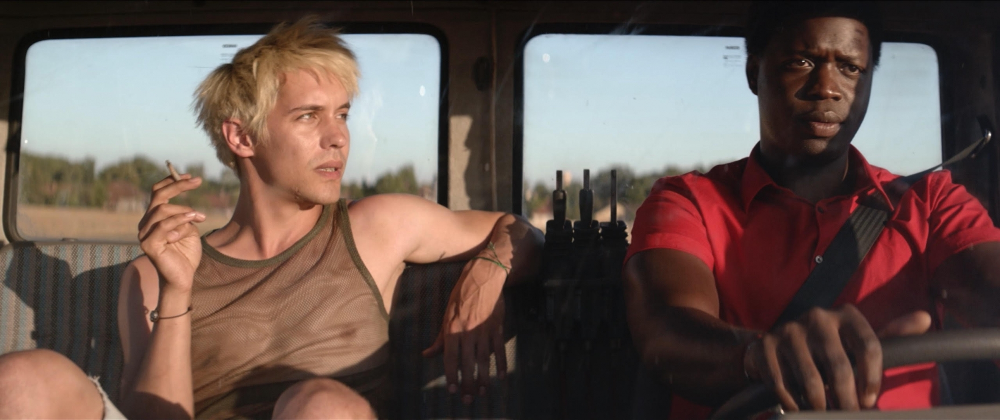The Deep Queer Massacre
Hilarious horror film with a bunch of gays getting picked off one by one in the countryside by an evil trans lady. Loved it

Mamantula
Horror film about a man-spider who eats people after sucking their dicks. Investigation by Spanish speaking lesbian detectives in Berlin. So good for so many reasons, loved it so much
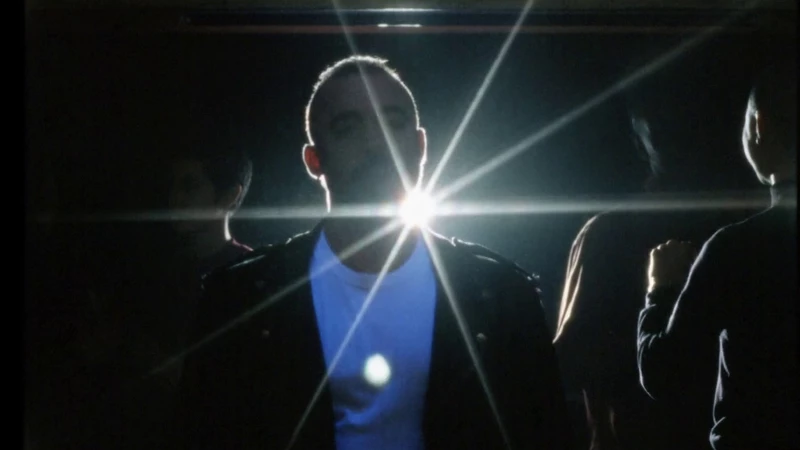Sunflower
At Mongay, I love sunflowers but this is just trope-y bullshit with cuts to a sunflower field. Very plain
Anora
Fascinating, thrilling film about a sex worker. I was on the edge of my seat the whole time, highly recommend
The Blair Witch Project
Watched this while taking mushrooms thinking it would be scary but it was actually mainly suspenseful and fun. Too many Americans
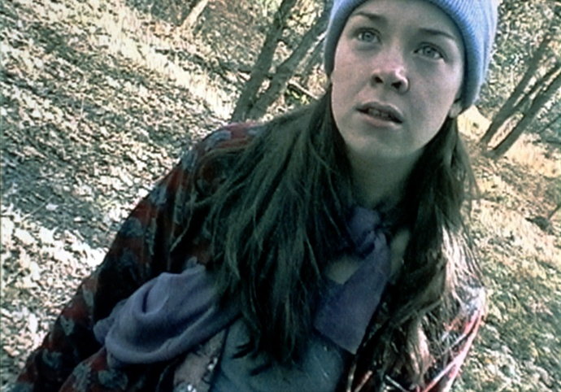Paprika
Watched this anime film while taking mushrooms thinking it would be trippy and fun but it was just a series of dream sequences without much connecting story. Frustrating watch with a really unpleasant sexual assault scene.

El Senador
Hilariously bad film set in Brazil, watched at Mongay. Acting so bad it's good. Great moment when the cinema audience gasped at the twist
Le Comte de Montecristo
Surprisingly great! Some nonsense in there but is there anything really quite like revenge porn?
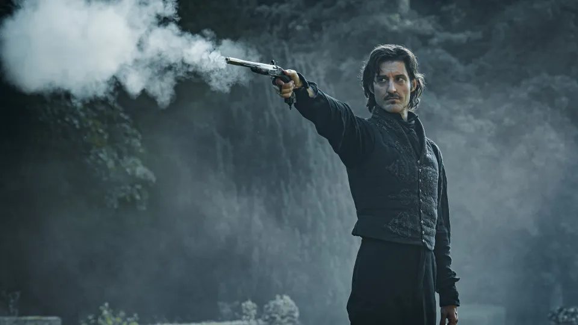Wallace and Gromit: Vengeance Most Fowl
Delightful kids film with lots of funny tropes and references

Pretty Woman
Rewatched this banger film. Great soundtrack and great vibes. I would also sell my body for Richard Gere